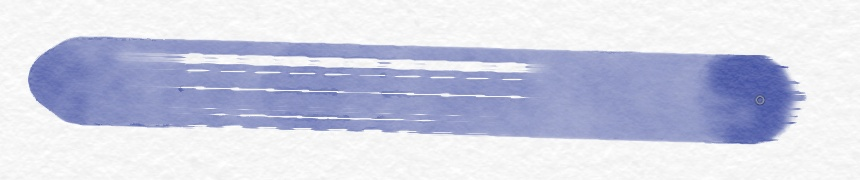

Сухой мазок новой версии 1ba5d02f. Нажим пера оставался постоянным (0.8) вплоть до отрыва: короткое щетинистое завершение движок добавляет на pen-up и сохраняет в операции.

В щелях уменьшаются одновременно вода и пигмент. На уже мокрой бумаге вода может заполнить дорожки снова.
Галерея реальных мазков и повторов · Попробовать живую кисть